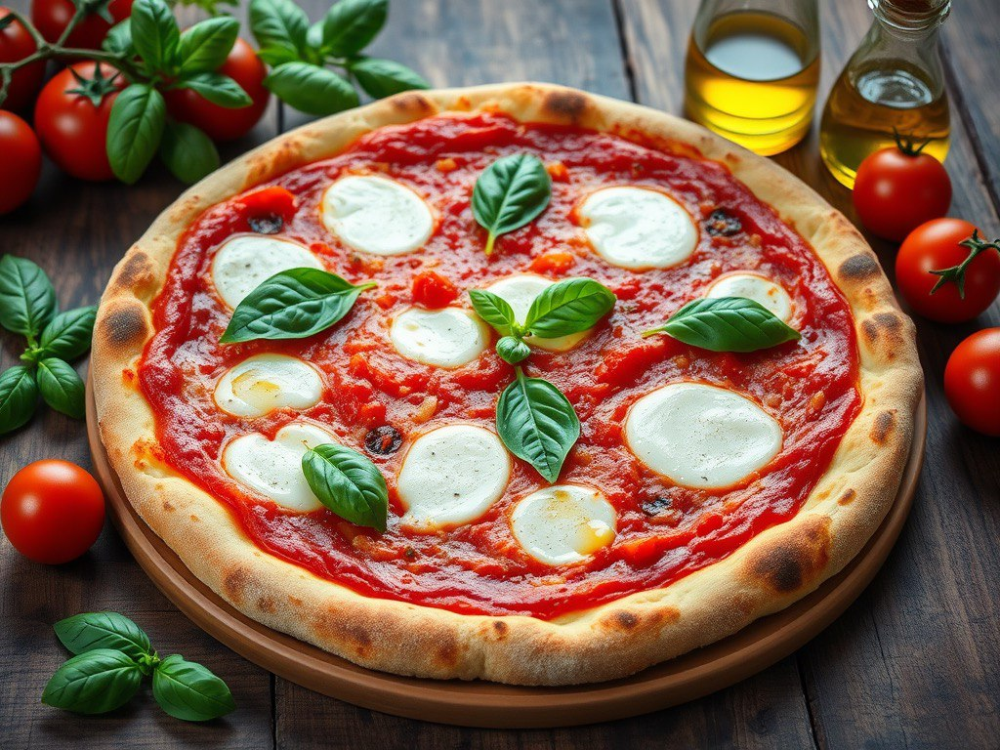
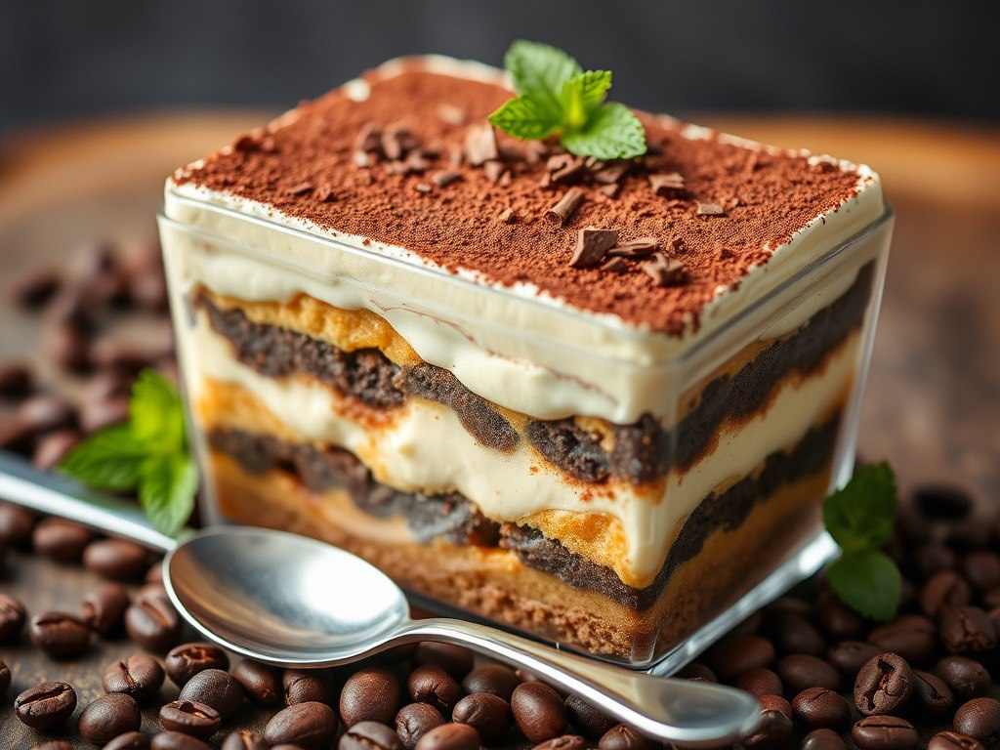

1 cup (250g) crushed tomatoes (San Marzano preferred)
8 oz (200g) fresh mozzarella cheese
Fresh basil leaves
Olive oil
Instructions
Mix water, yeast, sugar, and olive oil in a bowl. Gradually add flour and salt, kneading until smooth. Cover and let it rise for 2 hours or until doubled in size.
If using a pizza stone, place it in the oven and preheat to the highest temperature (450-500°F/230-260°C).
Divide the dough into portions, roll it out thinly, and shape into a circle.
Spread crushed tomatoes evenly over the base. Tear mozzarella into pieces and distribute over the top. Add fresh basil leaves and drizzle olive oil.
:
Place the pizza on the stone (or a baking tray) and bake for about 7-10 minutes until the crust is lightly charred and bubbly.

Recipe by: Joun Doe
Tiramisu
Ingredients
For the cream:
3 egg yolks
½ cup (100g) sugar
8 oz (250g) mascarpone cheese
¾ cup (180ml) heavy cream
For layering:
1 cup (240ml) strong brewed coffee (cooled)
2 tbsp coffee liqueur (optional)
20-24 ladyfinger biscuits
Cocoa powder (for dusting)
Instructions
Whisk egg yolks and sugar until pale and creamy.
Mix coffee with liqueur (if using).
Spread half of the mascarpone mixture over the ladyfingers.
Refrigerate for at least 4 hours (overnight is best) Dust with cocoa powder before serving.

Fresh Juice
Ingredients
2 oranges (peeled and chopped)
1 apple (cored and chopped)
1 carrot (peeled and chopped)
½ lemon (juiced)
1 cup cold water or coconut water
Ice cubes (optional)
Instructions:
Blend all ingredients together until smooth.
Strain if desired for a thinner consistency.
Pour into a glass, add ice, and enjoy!
Masala Chai
Ingredients
2 cups water
2 teaspoons loose black tea (or 2 tea bags)
2-3 teaspoons sugar (adjust to taste)
2-3 green cardamom pods (crushed)
2-3 cloves
1 small cinnamon stick
A small piece of ginger (grated or sliced)
A pinch of black pepper (optional)
Instructions:
In a pot, bring water, cardamom, cloves, cinnamon, ginger, and black pepper to a boil. Let it simmer for 2-3 minutes.
Add black tea leaves (or tea bags) and simmer for another 2 minutes.
. Add milk and bring the mixture to a gentle boil, stirring occasionally.
Sweeten with sugar as per taste and simmer for 1 more minute.